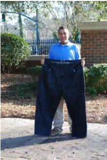

Clinton T., Age 29
For Clinton, the toughest decision was the admitting to himself that he couldn't do it alone; he needed help from a weight-loss professional. After doing some research, he discovered a fantastic weight-loss staff that answered his call for help. His medical support team has been by his side to encourage him every step of the way. As part of his individualized program, Clinton participated in a group of individuals all working toward the same goal. He found comfort in the knowledge that he was not in this battle alone. The weight-loss support group program allowed Clinton to interact with people facing similar challenges with their weight, and communicate with others who are all making life changes together. Today, Clinton is an advocate for medical weight-loss support and says, "if you are looking for a change, it WILL help you achieve it."
